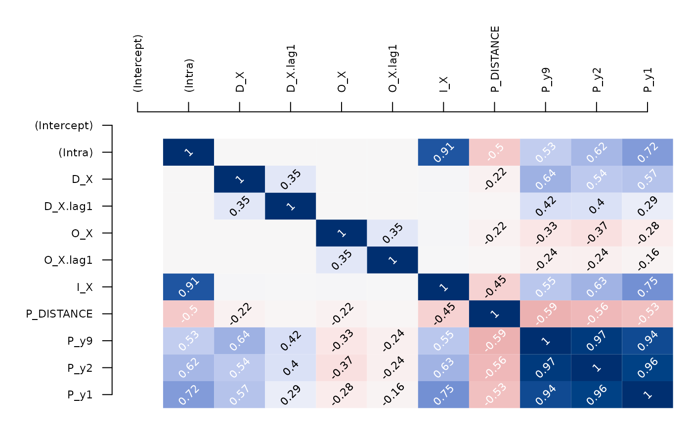
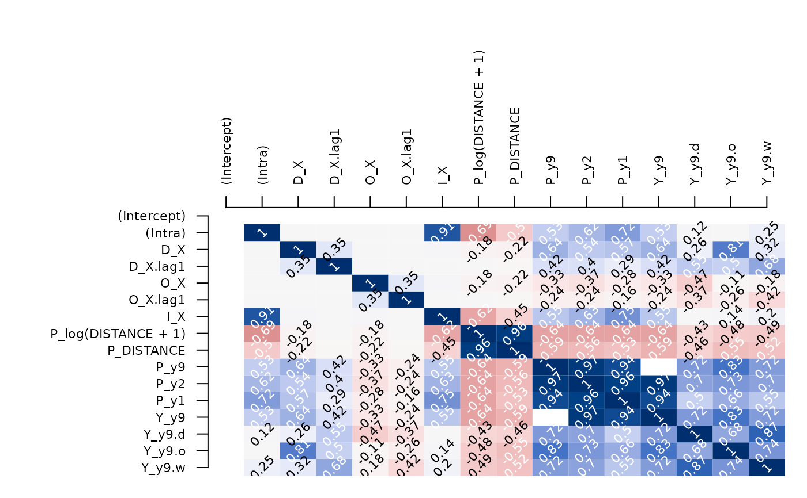
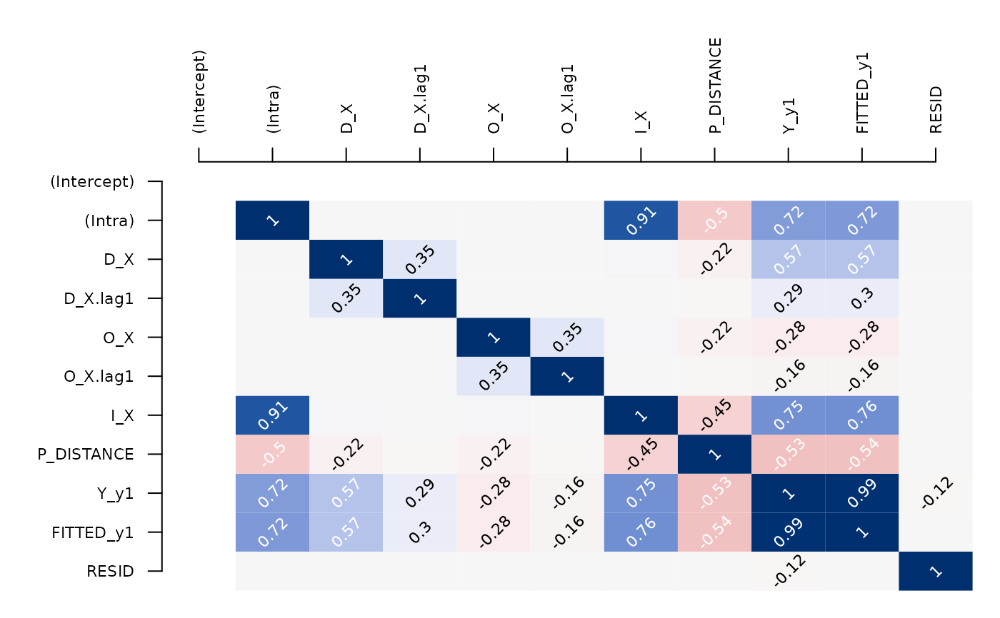

R/class_generics_and_maybes.R, R/class_spflow_network_multi.R, R/class_spflow_model.R
pair_cor.RdThe method computes person correlations for all variables available for the the origins, destinations, and OD-pairs. The OD-pairs information can be either come from a spflow_network_multi or a spflow_models.
pair_cor(object, ...)
# S4 method for spflow_network_multi
pair_cor(
object,
id_net_pair = id(object)[["pairs"]][[1]],
spflow_formula,
add_lags_x = TRUE,
add_lags_y = FALSE
)
# S4 method for spflow_model
pair_cor(
object,
add_fitted = TRUE,
add_resid = TRUE,
model,
exploit_fit = TRUE
)Arguments to be passed to methods
A character indicating the id of a spflow_network_pair-class()
A formula specifying how variables should be used
(for details see section Formula interface in the help page of spflow())
A logical, indicating whether spatial lags of the exogenous variables should be included.
A logical, indicating whether spatial lags of the dependent variables should be included.
Logicals, indicating whether the model residuals and fitted value should be added to the correlation matrix
A character indicating the model number, that controls different spatial
dependence structures should be one of paste0("model_", 1:9).
Details are given in the documentation of spflow_control().
A logical, if TRUE the correlation that is generated as a byproduct of
fitting the model is returned.
Otherwise it is recreated from the input data, without considering the
weights.
A matrix of pairwise correlations between all variables
# Used with a spflow_network_multi ...
cor_mat <- pair_cor(multi_net_usa_ge, "ge_ge") # without transformations
cor_image(cor_mat)

cor_mat <- pair_cor( # with transformations and spatial lags
multi_net_usa_ge,
"ge_ge",
y9 ~ . + P_(log(DISTANCE + 1) + .),
add_lags_y = TRUE)
cor_image(cor_mat)

# Used with a model...
gravity_ge <- spflow(
y1 ~ . + P_(DISTANCE),
multi_net_usa_ge,
"ge_ge",
spflow_control(model = "model_1"))
cor_mat <- pair_cor(gravity_ge)
cor_image(cor_mat)
